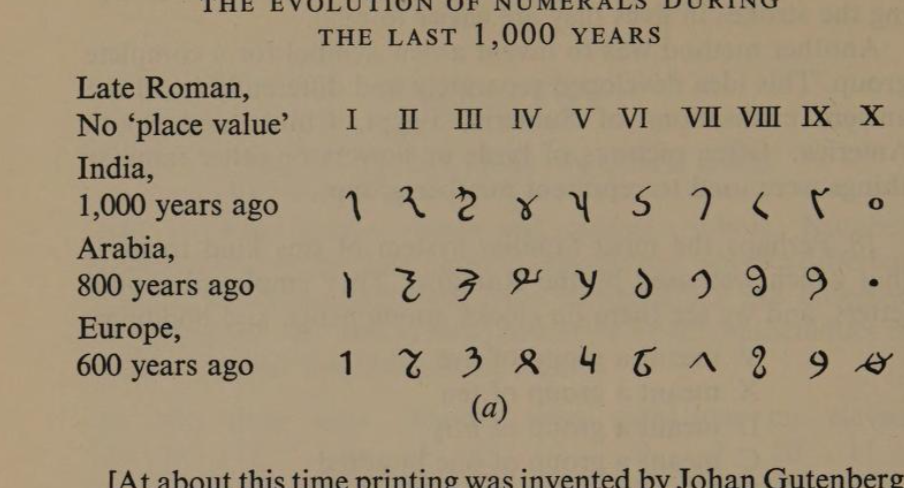
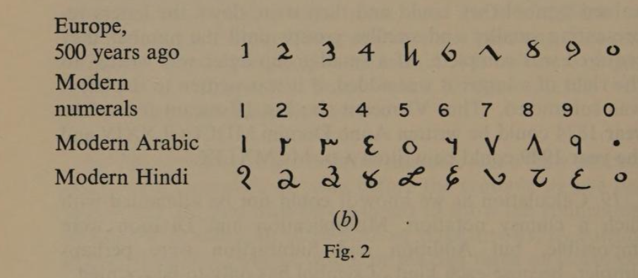
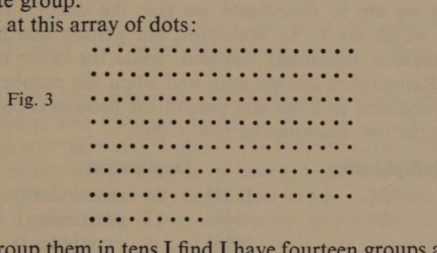
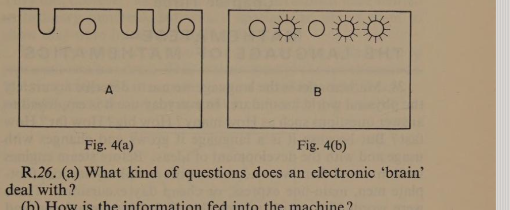

Chapter Two
Man Writing Numbers
page 1015. There are number names and number symbols. Number names are part of language, and so in countries where a different language is spoken, numbers have names which are different from those we use. But in most countries where mathematics is studied, number symbols are the same.
| one | two | three | four | five | six | seven | eight | nine | ten | eleven |
| 1 | 2 | 3 | 4 | 5 | 6 | 7 | 8 | 9 | 10 | 11 |
| un | deux | trois | quatre | cinq | six | sept | huit | neuf | dix | onze |
For this reason mathematics is sometimes called a universal language, meaning that it is the same all over the civilised world. But it is universal in a wider sense, too, for it is difficult to imagine any part of the Universe where one plus one does not equal two. Because we believe mathematics is universal in this way messages transmitted across space to other planets will probably be in mathematical terms.
16. The invention of symbols for numbers was a slow process and it took thousands of years before the symbols we use became fixed. At first man was satisfied to show the connection between three sheep, or three pots, or three arrows, by cutting three notches in a piece of wood, or making three scratches on a clay tablet. In the story of Robinson Crusoe we are told that he kept count of the days by this method. Even nowadays we do the same sort of thing when we are scoring at a cricket match. Notice that ‘scoring’ and ‘scratching’ have the same meaning.
In our modern script we still use the simple stroke to mean ‘one’.
17. All ancient civilisations seem to have begun their numbering systems by using this correspondence between single strokes and the things they were counting. This method soon becomes very clumsy, as you will appreciate if you try to assess how many things this row of strokes stands for ||||||||||||.
One method of making the record clearer was to put the fifthpage 11 stroke across the others like this |||| |||| ||||, so that by grouping the strokes in fives they are easier to read.
Another method was to invent a new symbol for a complete group. This idea developed separately and differently in all the ancient civilisations of Sumeria, Egypt, China, and South America. Often pictures of birds or flowers or other familiar things were used to represent number groups.
18. Perhaps the most familiar system of this kind to us is that which was used by the Romans. They employed capital letters, and we see them on clocks, monuments, and buildings.
| V | meant a group of five |
| X | meant a group of ten |
| L | meant a group of fifty |
| C | meant a group of one hundred |
| D | meant a group of five hundred |
| M | meant a group of one thousand |
To write down a large number they would choose the biggest valued symbol they could and then write down the letters representing smaller and smaller groups until the number they required was complete. If a small-group letter was written to the right of a larger it was added, if it was written to the left it was subtracted. Thus VI meant six; but IV meant four. The year 1874 could be written Anno Domini MDCCCLXXIV and the year 1949 could be written A.D. MCMXLIX.
19. Calculation as we know it could not be attempted with such a clumsy notation. Multiplication and Division were impossible, but Addition and Subtraction were perhaps simpler, because each kind of symbol has only to be counted.
| Addition | Subtraction |
|---|---|
| CC XXX V II | CCC XX IIII |
| C XX II | CC X II |
| CCC L V IIII | C X II |
20. Our present notation originated in India and the symbols 1 2 3 4 5 6 7 8 9 0 are known as Hindu-Arabic. The spread of learning into Europe during the thirteenth and fourteenth centuries gradually introduced these numerals and the invention of printing fixed their type. It is interesting to note that in India and Arabia the shapes of the symbols went on evolving, so that today they are very different from ours.

[At about this time printing was invented by Johan Gutenberg (1398–1468) and was introduced into England by William Caxton (1422–91) who set up his first press in 1474.]

Before the acceptance of these symbols most calculations were done on a bead frame called an Abacus. The beads on the right-hand wire stood for ones, those on the next wire for tens, those on the next for hundreds, and so on. The great invention of an unknown Arabian mathematician was the symbol for zero which represented an empty wire in the frame. This was called cifra.
Our word cypher comes from the same source, and for a long time calculating was known as cyphering. Can you now see how it simplified reckoning? The new numerals were not at first welcomed. People often prefer familiar things to better innovations, and it was a hundred years later before English Parish Church Registers were written in the new style. In the four-page 12teenth century there was a regulation at the University of Padua that the prices of books should be written:
‘Non per cifras sed per literas claras.’
Though you may not have learned Latin you will be able to recognise the translation of this as:
‘Not in cyphers but in clear letters.’
21. No one knows for certain why we think of numbers in groups of tens. It may be because we have ten digits on our two hands, and as fingers were used for the first attempts at calculation, ten was the most convenient number to think of as a complete group.
Look at this array of dots:

If I group them in tens I find I have fourteen groups and nine dots over. So I write down 9. Then I collect the fourteen groups into ten groups and four groups over. I write four in front of the nine, making this 49. I also have one large group made up of ten groups of ten which I write in front of the 49, and I say the number of dots is 149. I could have grouped them in fives. This habit might have developed if man had used only one hand. He would perhaps have counted like this. Grouping the dots in fives we get four dots over, so we write 4. Grouping the groups into fives we again have four over, and we write 44. Grouping again we have none over, so we write 044. Our final grouping gives 1044. (This is NOT one thousand and forty-four. You just say ‘one, oh, four, four’.) It is written 10445. You should do this practically.
The important thing to see is that 149 (in groups of tens) means exactly the same number as 1044 (in groups of fives). We call the group pattern the ‘base’, and to write numbers to a different base it is only necessary to keep on dividing by the base group and to write down the remainders.
We can say the number of dots in fig. 3 is 149 to the base 10, or we can say it is 1044 to the base 5.
page 14Can you say how many dots there are to the base 6? Doing this exercise practically, by using dots on a piece of scrap-paper, will help to make it clear.
22. Even after the new numerals were adopted, methods of calculating were slow to develop. Once you have learned your ‘tables’ you are able to multiply any two numbers easily and neatly. Before the importance of knowing the Multiplication Tables was fully realised all kinds of methods were tried. One of these is known as ‘Duplication’, because the only process required is doubling and halving. In some parts of Europe this method is still used, and because it has some bearing upon the ideas we are to investigate we give the detail. The two numbers which are to be multiplied are written side by side. One of them is repeatedly doubled, while the other is being halved. Remainders are ignored, and when the number being halved is reduced to 1 the first part of the process is complete. Compare the two examples of 124 × 26:
| Multiplication | Duplication | |||
|---|---|---|---|---|
| 124 | [124] | 26 | remainder 0 | |
| 26 | 248 | 13 | remainder 1 | |
| 744 | [496] | 6 | remainder 0 | |
| 2480 | 992 | 3 | remainder 1 | |
| 3224 | 1984 | 1 | remainder 1 | |
| 3224 | ||||
The second part of the process is to cross out those numbers in the left-hand column which are opposite even numbers in the right-hand column, shown in brackets, and then find the total of the rest. To understand why this is so look through Section 21 again. Written to the base 10 the number of dots is 1(10²) + 4(10¹) + 9(10⁰). If in this case we write 26 to the base 2 we see that it is 1(2⁴) + 1(2³) + 0(2²) + 1(2¹) + 0(2⁰), and if you compare this expansion with the right-hand side of the Duplication you will see why we don’t require the 2² or the 2⁰ lines.
23. If you found the last paragraph difficult, don’t worry about it. There were one or two ideas in it which may have been new to you, and all of us need time to absorb new ideas. One of the difficulties may have been the small numbers written at the top right-hand corner of the main numbers. These are called indices, and they have a special meaning. 5³ meanspage 15 5 × 5 × 5; 5³ means 5 × 5 × 5. This may seem clearer if we make a list:
| 10³ means | 10 × 10 × 10 | and equals | 1,000 |
| 10² means | 10 × 10 | and equals | 100 |
| 10¹ means | 10 | and equals | 10 |
| and thus 10⁰ means | 1 | and equals | 1 |
In the same way, if we are writing numbers to the base 5, then
| 1,000 means 5³, | i.e. 5 × 5 × 5 | and equals 125 to base 10 |
| 100 means 5², | i.e. 5 × 5 | and equals 25 to base 10 |
| 10 means 5¹, | 5 | and equals 5 to base 10 |
| and thus 1 means 5⁰, | 1 | and equals 1 to base 10 |
You should notice that both numbers to the power⁰ equal 1. This is true of any base. In mathematical language we say, n⁰ = 1.
This is because when we count we are numbering objects individually, and the third column is the first column made up as units, no matter what base we are counting on. The second column indicates the number of base-groups; the third column is the number of bases × bases, and so on. Can you now see why the figures 1044, if they are written to the base 5, mean:
| 4 × 5⁰ | that is four ones | = 4 |
| 4 × 5¹ | that is four fives | = 20 |
| 0 × 5² | that is 0 × 25 | = 0 |
| 1 × 5³ | that is 1 × 125 | = 125 |
— so that all numbers to the base 5 means this is the same as 149 to the base 10.
24. You will have realised that we may use any base we choose to for writing down numbers. Sometimes base 2 is particularly useful. In Section 21 we had 149 dots. To write this number to the base 2 we divide 149 continuously by 2, and note the remainders. In this way:
| 2)149 | |
| 74 | + 1 |
| 37 | + 0 |
| 18 | + 1 |
| 9 | + 0 |
| 4 | + 1 |
| 2 | + 0 |
| 1 | + 0 |
| 0 | + 1 |
Thus, the number of dots on the page is 10010101 written to the base 2. Notice in which direction the remainders are read.
page 1625. When we were discussing the method of multiplying called Duplication we experimented with 124 × 26. Let us write 26 to the base 2.
| 2)26 | |
| 13 | + 0 |
| 6 | + 1 |
| 3 | + 0 |
| 1 | + 1 |
| 0 | + 1 |
Reading this result from the bottom we see that we are multiplying by 11010, which is the number 26 written to the base 2.
If you now compare this with the column of figures we added up you will see that we obtained the correct result of 3224 by following the pattern of 11010, that is, we did not add the first and third numbers because they correspond to the zero positions in 11010.
This system of writing numbers is used in electronic calculating machines. The reason is that only two symbols, 1 and 0 are required to write any number, no matter how large. An electrical circuit has two states, on and off, and these can be matched to the two symbols of the Binary System as this method of writing numbers is called.
26. In Chapter One we were discussing decisions made on the basis of abstract principles such as Love, Justice, Duty, etc., but there is another class of questions which has a factual basis. Many of them are commonplace examples such as occur every day, and these usually can be decided by common sense. The kind of decision we mean is whether or not to take a macintosh when going out for the day if the weather forecast was ‘unsettled’. Decisions based upon facts, no matter how complex, are the kind which machines can evaluate. Machines have not yet been built to deal with questions involving abstract principles. Only human beings who can love, believe, and be afraid, can deal in their own individual way with questions of that kind. But machines can be built to deal with facts and figures, and they can indicate the most economical and efficient way of dealing with such complicated matters as organising railway traffic, or sorting mail, or routing telephone calls and things of that kind. Information is fed into the machine in Binary code (using 1 and 0) by means of punched cards or paperpage 17 tape in which holes or slots represent the facts. This is called ‘programming’ the machine. Part of this process is what we mean when we speak of treating questions mathematically and this is the way in which machines are said to ‘think’.
27. Constructing such a machine demands first of all that its limitations are understood; then a method must be invented of using symbols to represent facts and their relationships. Later on you will be shown how to construct a set of punched cards for solving problems, and how to construct a simple ‘logic’ machine, using a battery, a lamp, and a few switches.
Second Review
R.15. (a) What is meant by ‘Mathematics is a universal language’?
(b) What other kind of symbol-writing is universal in this way?
R.16. Where does the word ‘scoring’ come from?
R.17. Name two ways in which large numbers were made easier to recognise?
R.18. (a) Write the modern numbers for:
[X] [D] [IX] [XXXXIV] [MDCCCCLXIII]
(b) Write these numbers in Roman Capitals:
[7] [50] [19] [1,728]
(c) Write these in simpler roman form:
[IIII] [XXXXXXX] [CCCC] [MDCCCCLXIII]
R.19. Try this addition, giving the result in Roman numerals:
| CCCXXXVII |
| CC XX III |
| C X III |
R.20. (a) What special symbol was invented to represent the empty wire on the abacus?
(b) How many different symbols are there in the Hindu-Arabic numerals?
(c) Can any number, however big, be written with these few symbols?
R.21. (a) Upon what size of group are our numbers based?
(b) What is a possible reason for this?
(c) Can any other-sized group be used?
(d) Write the number of dots in Section 21 to the base 7.
R.22. Find the result of 85 × 43 by Duplication and check your answer by the modern method of Multiplication.
R.23. (a) What is the name given to the small numbers written in the top right-hand corners of: 5⁴; 6¹; 2⁴?
(b) Complete these statements:
5³ = …… 6² = …… 2⁴ = …… 8¹ = …… 3⁹ = …… n⁰ = ……
(c) This number 365 can be explained as:
[3 × 10²] + [6 × 10¹] + [5 × 10⁰]
Translate 2,478 in the same way.
(d) If the number 2,478 were a number written to base 9, the figure 8 would still mean eight units, but the figure 7 would mean seven nines.
- What would the figure 4 stand for?
- What would the figure 2 stand for?
- Translate the whole number 2,4789 into base 10.
R.24. Change these numbers from base 10 to base 2: (a) 5; (b) 10; (c) 23; (d) 1; (e) 129.
R.25. (a) Look again at your setting out of the Duplication of 85 × 43, and then without any calculation say what the number 43 would be if it were written to the base 2.page 19
(b) What is the system of writing numbers to base 2 called?
(c) What symbol in this system corresponds to an electric circuit in the on position?

R.26. (a) What kind of questions does an electronic ‘brain’ deal with?
(b) How is the information fed into the machine?
(c) What is the preparation of this information called?
(d) Before this preparation can be done symbols will have to be decided upon. What will they represent?
(e) Diagram A represents a card punched in Binary Code. Diagram B represents the lamps of a machine working on the Binary System.
What number does the card represent: (1) to base 2; (2) to base 10?
What number is indicated by the lamps: (3) to base 2; (4) to base 10?